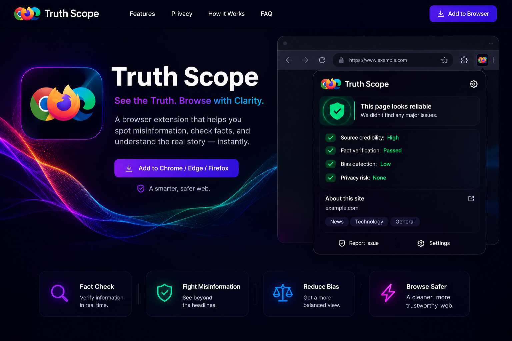
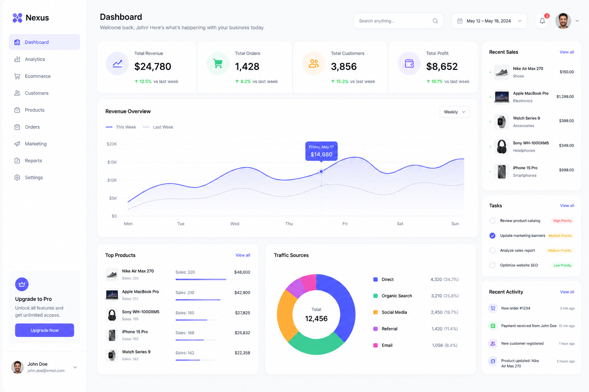
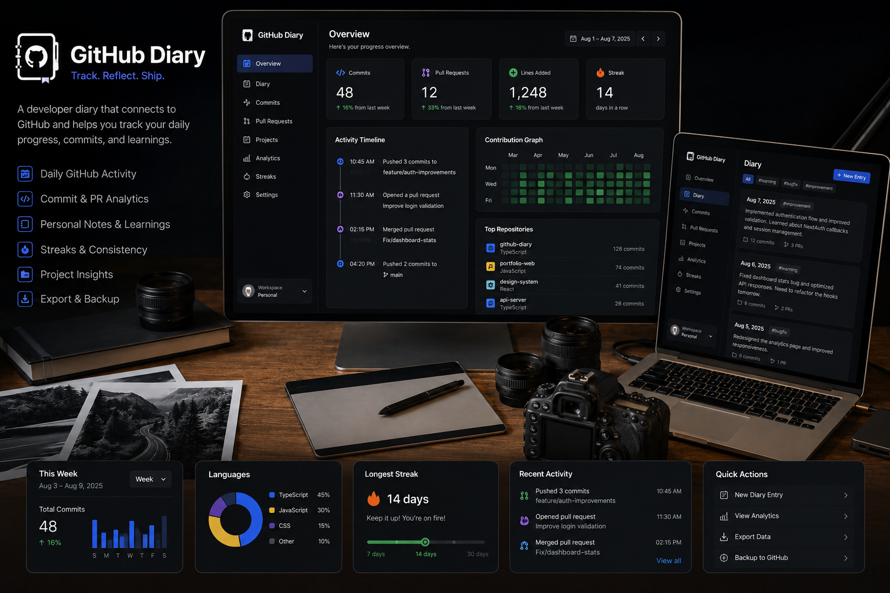
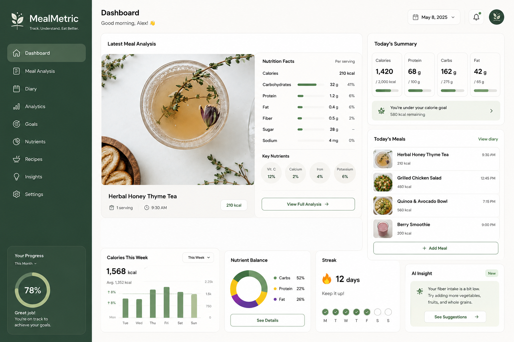
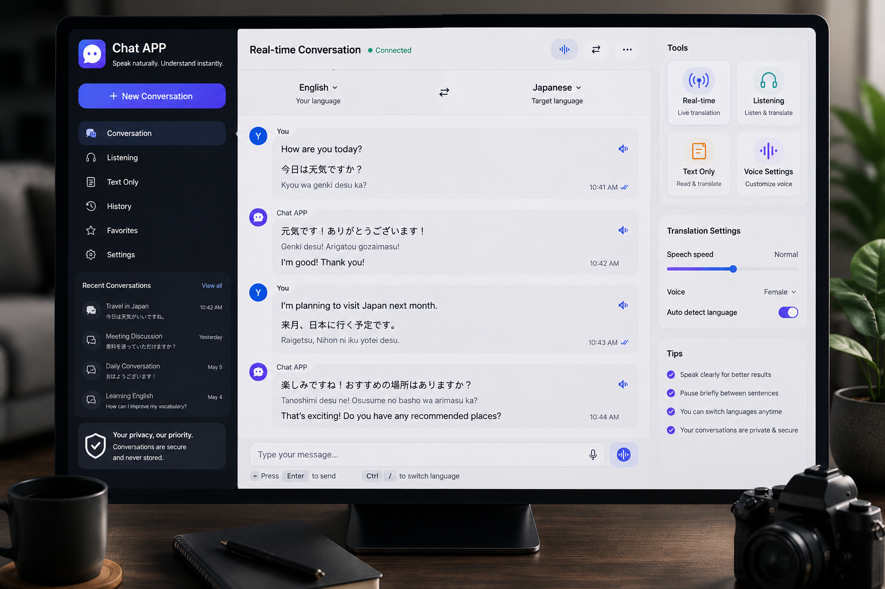
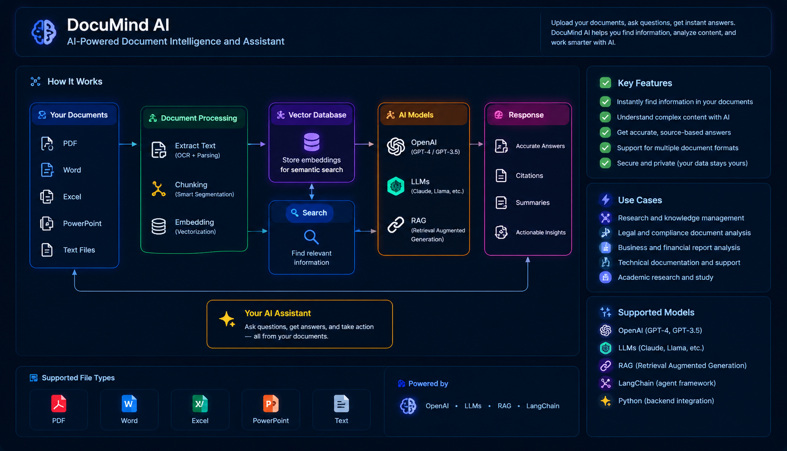

TruthScope
AI-powered browser extension that analyzes webpage content, detects misinformation, and returns a credibility score.
- JavaScript
- Gemini SDK
- Manifest V3
Senior Full Stack Engineer | Technical Lead | Software Architect
Download CVA few recent builds that combine product thinking, thoughtful UI, and practical engineering.

AI-powered browser extension that analyzes webpage content, detects misinformation, and returns a credibility score.

A Smart India Hackathon project focused on intuitive dashboards for government departments and administrative workflows.

A VS Code extension that automatically records coding activity into a private GitHub-backed diary for reflection and progress tracking.

A web app that calculates meal nutrition information from ingredient input and helps users understand their food better.

A modern real-time messaging experience with authentication, typed messages, and a polished user interface.

DocuMind AI is an AI assistant that uses OpenAI, LLMs, RAG, and LangChain to search documents and answer user questions.
•Designed scalable software architectures tailored to client business requirements.
•Led technical planning from requirements gathering through production deployment.
•Developed AI-powered solutions using LLMs, RAG, LangChain, and AI Agents to automate workflows and enhance business applications.
•Delivered custom software solutions while maintaining close communication with stakeholders throughout the project lifecycle.
•Led architecture and development of underwriting systems and customer-facing portals.
•Built scalable frontend and backend features using modern JavaScript frameworks.
•Increased software reliability by maintaining over 80% automated test coverage with Jest and Cypress.
•Conducted code reviews and architectural design sessions to improve engineering quality.
•Standardized development workflows and deployment processes using Git and CI/CD practices.
•Delivered new product features while collaborating closely with product managers and business stakeholders.
•Modernized more than 30 legacy application pages, improving responsiveness and mobile usability.
•Designed Docker-based development environments to accelerate onboarding and ensure production consistency.
•Built automated CI/CD pipelines with Circle CI and AWS, improving deployment reliability and operational efficiency.
•Refactored shared infrastructure to improve maintainability across multiple engineering teams.
•Served as Technical Lead for multiple enterprise platforms, including tuition management and payment gateway systems.
•Directed software architecture and feature implementation across multiple concurrent projects.
•Mentored junior developers through code reviews, technical guidance, and pair programming.
•Improved application performance through browser profiling and frontend optimization.
•Managed project scope, engineering timelines, and technical planning while coordinating with stakeholders.
•Gathered business requirements and translated them into scalable web applications.
•Modernized legacy PHP systems by migrating them to an MVC architecture.
•Developed responsive websites using WordPress, HTML5, CSS3, and JavaScript.
•Improved browser compatibility and application performance across multiple platforms.
•Produced technical documentation and testing artifacts to support long-term maintenance.
Call Us
Email Us